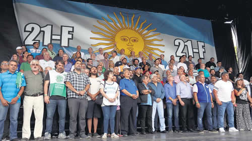

Real Chubut - Agencia de Noticias


Cientos de miles de gritos contra el ajuste

La concentración tuvo una fuerte participación de movimientos sociales, se desarrolló sin inconvenientes y para los organizadores representó el comienzo de un polo opositor contra las políticas del Gobierno.
Una multitud participó de la marcha y concentración que convocaron gremios de la CGT, las dos CTA y movimientos sociales para repudiar las políticas de ajuste y flexibilización que aplica el gobierno de Mauricio Macri. Los organizadores calcularon 400 mil participantes y otros más cautelosos afirmaron que hubo 250 mil. La Policía Federal sumó mucho menos pero tal vez porque miraba hacia el norte de la avenida y no hacia el sur donde se apiñaron las columnas. Los discursos tuvieron como denominador común la crítica al modelo económico, la persecución a dirigentes sindicales y la necesidad de generar un polo opositor al gobierno conservador. Por caso, el titular de la CTA de los Trabajadores, Hugo Yasky, aseguró que cada vez que los gremios salen a la calle el gobierno “corre presuroso en busca de un juez amigo” para intervenir sindicatos o inventar causas y avisó que “si quieren buscar ladrones les pasamos una dirección: Balcarce 50, es una casa rosada”. A su turno, el conductor de la Asociación Bancaria, Sergio Palazzo, le pidió a Macri que se dedique a “gobernar para todos los argentinos y no solo para su clase, que es la que se lleva toda la renta nacional”. En tanto, el líder de los camioneros, Hugo Moyano, señaló que la concentración representó un mensaje para el presidente “para que no siga llevando políticas que hambrean a la parte más sensible de nuestra sociedad”.
Desde temprano una gran cantidad de columnas se fueron ubicando en las inmediaciones del palco cuyo principal lugar lo dejaron reservado para el Sindicato de Camioneros. Sin embargo, los movimientos sociales como la Confederación de Trabajadores de la Economía Popular (CTEP), Barrios de Pie, la CCC y otras de menor envergadura fueron las que aportaron la mayor cantidad de participantes. Un detalle que da cuenta no sólo del grado de organización que tienen sino que son espacios que se nutren y contienen a aquellos trabajadores que se cayeron del sistema fruto del ajuste.
De los gremios que se hicieron presente el de camioneros fue el que más militancia aportó que llegaron desde diferentes puntos del país para respaldar a su líder. ATE y sobre todo la CTA que conduce Yasky fueron otras de las organizaciones que prevalecieron entre el número de participantes. El peronismo, con mucha presencia kirchnerista, hizo su aporte con la asistencia de buena parte del bloque de diputados nacionales, los principales intendentes del conurbano y dirigentes de las agrupaciones nacionales y provinciales.
Una hora antes de que comenzaran los discursos comenzaron a llegar los que luego ocuparon el escenario. El último fue Moyano quien, como de costumbre, llegó acompañado de su hijo Pablo dentro de una ambulancia del sindicato. En esta oportunidad también estuvieron en el móvil su abogado, Daniel Llermanos, y el líder La Alameda, Gustavo Vera.
Los discursos
Poco antes de las 15 y después de entonar el himno se escuchó el primer mensaje contra Macri con el cántico que en las últimas semanas se escuchan en las tribunas de las canchas de fútbol. Luego se acercó al micrófono el único triunviro de la CGT presente, Juan Carlos Schmid, quien reiteró el repudio de los gremios a la rebaja a los jubilados, el reclamo por la derogación de la ley previsional y señaló que el modelo económico vigente lo único que produce es “rico más ricos y pobres más pobres”. No dijo que hablaba en nombre de la central obrera pero recordó que el respaldo a la marcha nació del documento rubricado en enero pasado en Mar del Plata donde varios gremios se comprometieron a acompañar las luchas sectoriales sindicales. Más tarde Moyano recordó que dicho documento fue aprobado por el Consejo Directivo de la central obrera.
Palazzo se acercó al atril, miró hacia la multitud y afirmó: “Somos cientos de miles”. Luego, el principal referente de la Corriente Federal de los Trabajadores repudió las declaraciones de funcionarios del gobierno que presagiaban una movilización violenta: “Violencia es robarle a los jubilados, imponer una nueva ley laboral, quitarle los impuestos a los ricos y cargarlos sobre los trabajadores. Violencia es atacar a las organizaciones sindicales y perseguir a sus dirigentes para silenciarlos. Eso nunca lo lograrán. Estamos acá, de pie y no tenemos miedo”, dijo para regocijo de los presentes. El bancario anunció que la marcha también daba cuenta del inicio del “hermoso camino” de la resistencia al gobierno y si bien habló de la necesidad de un movimiento obrero unido se permitió recordar y criticar, aunque sin nombre propios, a los dirigentes que no acompañaron la movilización.
Pablo Micheli, de la CTA Autónoma, bregó por la unidad del sindicalismo y afirmó que la marcha es un grito que le exige al gobierno el fin de los despidos, la reincorporación de los despedidos y, sobre todo, para que “paren con el desguace y la entrega del país”. Consideró como imprescindible “nacionalizar la lucha” y evaluó que la mejor opción sería “convocar a un paro nacional”.
Por los movimentos sociales habló Esteban “gringo” Castro que fue el único que hizo referencia al paro de mujeres del próximo 8 de marzo. Anunció la solidaridad total con ellas, convocó a todos a acompañar el paro y aseguró que “ese día los hombres vamos a reemplazar a las mujeres que le dan de comer a los pibes para que no falte ni una sola a esa movilización histórica”. Dicho sea de paso, el escenario tuvo una representación ínfima de mujeres donde se vio a Sonia Alesso de Ctera, Sandra Maiorano del Sindicatos de Médicos, Vanesa Siley de judiciales y como locutora ofició Claudia Lazzaro, secretaria de derechos humanos y género de Curtidores.
El siguiente fue Yasky que con ímpetu afirmó que “este día va a quedar en la historia como el día de la unidad de los trabajadores y de los que no nos ponemos de rodillas ante un gobierno de patrones”. El dirigente gremial y también diputado por el FPV-PJ indicó que muchos de los que fueron sus alumnos cuando era maestro en la escuela pública “tienen más cultura que muchos de los que nos gobierna”.
El cierre estuvo a cargo de Moyano que dividió su discurso en dos partes. La primera la utilizó para calificar de “disparates” las interpretaciones que ponían como único objetivo de la marcha su defensa por las causas judiciales abiertas en su contra. “No estoy implicado en ningún tema de corrupción, no tengo ninguna denuncia, pero si la tuviera, tengo las suficientes pelotas para defenderme solo”, dijo. Luego, adentrándose un poco más en la política destacó la amplia convocatoria de “distintos sectores políticos e ideológicos” y, tal vez retomando lo que antes dijo Palazzo, señaló que se estaba gestando “una nueva resistencia a las políticas de Gobierno” pero advirtió que para nada es un movimiento desestabilizador. A partir de eso es que le pidió a los trabajadores presentes que se preparen para “cuando llegué el momento de expresar la voluntad democrática. Los gorilas no pueden estar más en la conducción del país porque nos quieren quitar la dignidad a los hombres de trabajo y no lo podemos permitir”, dijo y poco después comenzó la desconcentración rápida y sin inconvenientes para pesar de los agoreros.
El escenario sindical
La movilización tuvo un costado político sindical que mucho tuvo que ver con la interna que vive la CGT con miras a la definición de una nueva conducción. Propios y extraños miraron con detenimiento la composición del escenario donde habló Moyano donde hubo ausencias notorias y no fueron precisamente aquellos sindicalistas que por diferentes razones no acompañaron o se bajaron de la convocatoria. Lo llamativo fue el faltazo de gremialistas que tienen cargo en el Consejo Directivo y que habitualmente se muestran como ultramoyanistas. Uno de ellos fue el titular de Panaderos, Abel Frutos, un habitué de los actos del camionero pero ayer, a la hora de los discursos, tuvo una impostergable reunión con el ministro de Trabajo, Jorge Triaca. Tampoco participó Jorge Sola, a la sazón secretario de Prensa de la CGT. Si bien no representan gremios importantes en cuanto a peso real en el movimiento obrero, lo cierto es que por lo menos en el caso del panadero priman los intereses políticos por sobre los sindicales y las lealtades. En cuanto a los presentes también fueron pocos los que tienen un puesto en el Consejo Directivo. Además de Schmid, que evitó todo contacto con la prensa, estuvieron Omar Plaini (canillitas), Julio Piumato (judiciales) y Facundo Moyano (peajes), tal vez demasiado pocos cuando algunos de ellos se entusiasman con disputar la poltrona de la CGT.
Fuente: Pagina 12